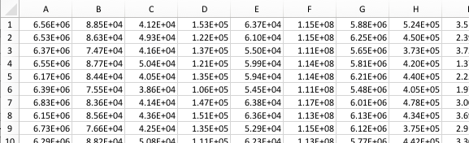
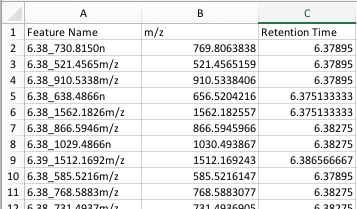

System and data requirements¶
This page details the data and system requirements and the setup for running ISTOCSY.
System requirements¶
ISTOCSY runs in Python.
The following libraries must be installed:
In addition, there is some dependency on the nPYc library which can be downloaded here:
<CAZ ADD THIS>
Data requirements¶
ISTOCSY can work with data input in one of two ways; either in csv file format; or as an nPYc dataset object.
Format 1: csv file format¶
If using the csv file format, two csv files are required.
- intensity data file: this file should contain numerical data only, of ns*nv dimensions, where ns is the number of samples (rows in the matrix) and nv the number of variables (columns in the matrix) i.e., the intensities of nv features across ns samples.
- feature metadata file: as a minimum, this file should contain 3 columns and nv + 1 (header) rows. After the column headers, each row should give information on the corresponding variable in the intensity data file, and the 3 columns must consisit of ‘Feature Name’ (str) name of the feature; ‘Retention Time’ (number) feature retention time; ‘m/z’ (number) mass of the feature. Note the columns in the feature metadata must have these exact headers for the information to be extracted.
Example excerpt from the intensity data file:

Example excerpt from the feature metadata file:

Format 2: nPYc dataset object format¶
Give brief details on: - nPYc - pyChemometrics - nPYc dataset object
<CAZ not sure whether to include this or not…?>